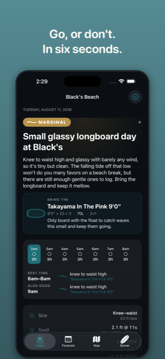
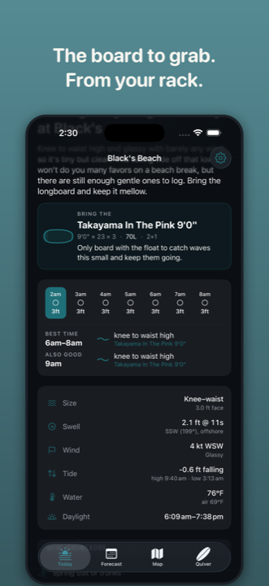
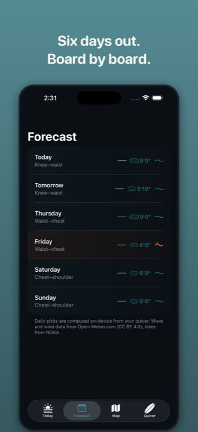
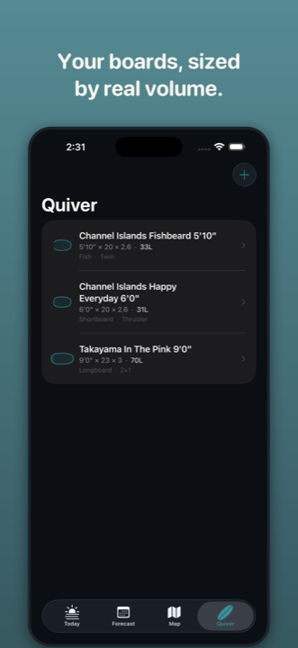
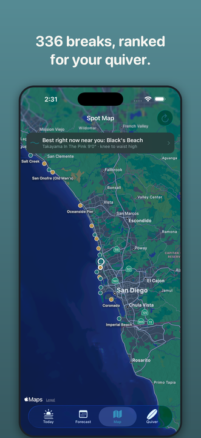

Stop reading swell charts. Just find out which board to grab.
Boardcall is the surf forecast app that ends the guessing: every morning it reads swell, wind and tide at your break and tells you — in plain English — whether it's worth going, and which board from your own quiver to bring.

One download. No account. Every board pick, every spot, free.
Boardcall is free on the App Store for iPhone and iPad — no subscription, no ads, no account required. Add your boards once, pick a home break from 243 spots worldwide, and get your first briefing in under a minute.
Everything you need for a six-second decision
One screen for today's call, one for the week ahead, one for your quiver, one for the whole map. No dashboards to interpret.




Real board math, plain-English delivery
Boardcall isn't a generic wave-height widget. It runs your actual boards through the actual physics, then writes the answer like a friend who already checked would tell you.
Add your quiver
Enter your boards' length, width, thickness, and type — or pick a real model from 216 built-in boards with sourced dimensions. No surfboard volume calculator or spreadsheet needed — Boardcall works it out for every board as you build your quiver.
Pick your spot
Choose from 243 real surf spots — the full US coastline plus Great Lakes, Puerto Rico, and marquee breaks across ~30 countries. No GPS, no location permission.
Get today's call
Every morning: swell, wind, and tide converted into a plain-English briefing, a straight verdict, and the one board from your own quiver to grab — with the reason why.
A straight verdict, every day
No forecast app tells you whether it's actually worth the drive. Boardcall does, in four words, with a safety gate that never oversells a day beyond your stated skill level.
If it's bad, Boardcall says so plainly — no hype, no notifications engineered to get you to open the app.
Board math, not a guess
Most surf apps that suggest a board just say "grab your 5'8"." Boardcall calculates real volume — length × width × thickness, shape-adjusted — for every board you own, weighs it against your size, skill, and today's wave face, period, and wind, and ranks them. Then it explains the pick in plain language.
Answers surfers actually search for
Real guidance on board sizing, wetsuit thickness, and reading a forecast — with a note on how Boardcall does each one automatically.
What a Surfboard Recommendation App Should Actually Do
A real surfboard recommendation app matches your actual board's volume to today's waves — not a quiz. See how Boardcall'…
GuideWhich Surfboard Should I Ride Today? A Surfer's Actual Decision Framework
Which surfboard should I ride today? Use the actual wave face, period, wind and board volume method surfers rely on, the…
GuideSurfboard Volume Chart by Weight and Skill Level
Use our surfboard volume chart by weight and skill level, then learn why wave size and period shift your target by 6-45%…
GuideSigns Your Surfboard Has Too Much or Too Little Volume
The real signs your surfboard has too much or too little volume, plus how to calculate the exact volume you need and why…
GuideIs It Safe for a Beginner to Surf Overhead Waves?
Is it safe for a beginner to surf overhead waves? The honest risk breakdown, plus how Boardcall caps your verdict to you…
GuideHow Do I Know If the Waves Are Too Big for Me?
How do I know if the waves are too big for me? A real self-check on the lineup, your recent sessions, and an honest skil…
GuideHow Many Feet Is Chest High, Waist High, and Shoulder High Surf?
How many feet is chest high, waist high, or shoulder high? A clear, defensible feet-to-body-part table — plus a free app…
GuideThe Case for a Surf Forecast App With No Account
Want a real surf forecast app with no account, login, or password? See exactly what data Boardcall keeps on your phone (…
GuideFree Surfline Alternative: What You Actually Get for $0
Free Surfline alternative? See what Surfline actually paywalls, what's genuinely free elsewhere, and how Boardcall gives…
GuideHow Cold Is Too Cold to Surf Without a Wetsuit?
How cold is too cold to surf without a wetsuit? Real water-temp thresholds, hypothermia signs, and how Boardcall gives y…
Common questions
Is Boardcall free to use?
Yes — Boardcall is free to download, with unlimited daily briefings, the full board-pick engine across your whole quiver, the worldwide spot map, and the six-day forecast all included. Boardcall Pro ($6.99/mo or $54.99/yr) only raises the weekly cap on richer AI-written briefings from 4/week to unlimited and adds a weekly AI coaching note based on your own logged sessions.
Does Boardcall require an account or login?
No. There's no signup, login, or password — your boards, spots, and profile are stored on your device, not in an account.
How does Boardcall decide which surfboard to bring?
It calculates real volume for every board in your quiver from length x width x thickness (adjusted for shape), matches it against today's wave face height, period, and wind plus your skill level and body weight, and names the one board that fits best — an AI model then writes the plain-English explanation.
What surfboard volume do I need for my weight and skill level?
It depends on both — heavier and less experienced surfers generally need more volume — but wave size and period shift that target by another 10-45%, which is why a single fixed number is only a starting point.
Is Boardcall a good alternative to Surfline?
For checking conditions and getting a board recommendation, yes — Boardcall's free tier includes unlimited briefings, the full worldwide spot map, and board picks with no paywall, though it doesn't include Surfline's live surf-cam network.
What does 'chest high' or 'waist high' actually mean in feet?
Roughly: knee-to-waist is 2-3 ft face height, waist-to-chest is 3-4 ft, and chest-to-shoulder is 4-5 ft. Boardcall reports every forecast in these plain-English terms instead of a bare number.
Is it safe for a beginner to surf overhead waves?
Generally no — overhead waves (roughly 5 ft+ face height) call for real experience and strong paddle power. Boardcall's safety gate automatically caps that day's verdict and warns beginners when conditions exceed their stated skill level.
How cold does the water need to be before I need a wetsuit?
Most surfers want at least a spring suit below about 75°F and a full wetsuit well before 65°F, with real hypothermia risk climbing fast under 50°F. Boardcall reads actual water temperature at your spot and gives a direct wetsuit call.
Your next surf check should take six seconds.
Free on the App Store. No account, no login, no location tracking — just your boards, your spot, and a straight answer every morning.